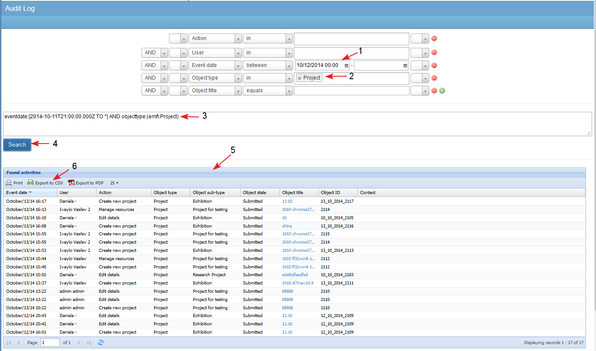

The Audit Log Search Results may be exported by members of the administrators group.
The admin user is able to export the audit log search results in a csv or a pdf file and can save the search results in a file on his/ her PC.
Export to csv
The user makes a search in the audit log and selects to export the results in a csv file (1-2-3-4-5-6).

- The user is asked to choose export option: to export all columns of the table or only those that have been configured as visible.

- The exported file contains the entered search criteria and columns as selected.

Export to pdf
- The user makes a search in the audit log and selects to export the results in a pdf file (1-2-3-4-5).

- The user is asked to choose export option: to export all columns of the table or only those that have been configured as visible.

The exported file contains the entered search criteria and columns as selected.